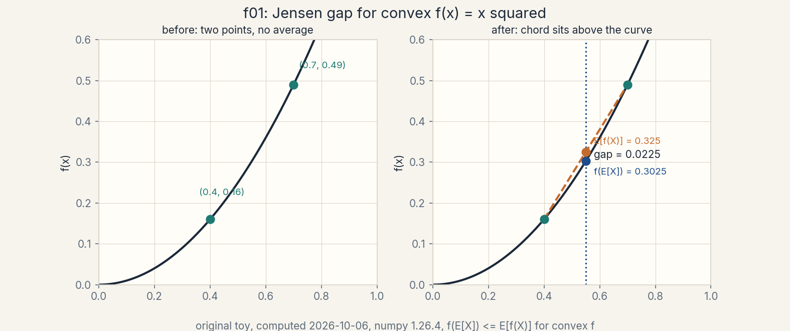
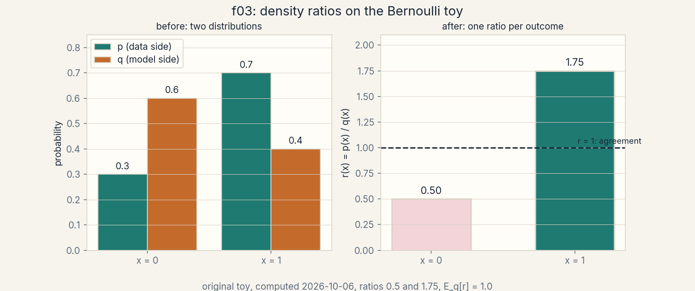
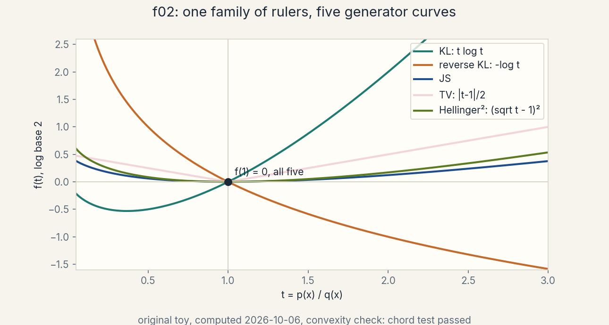
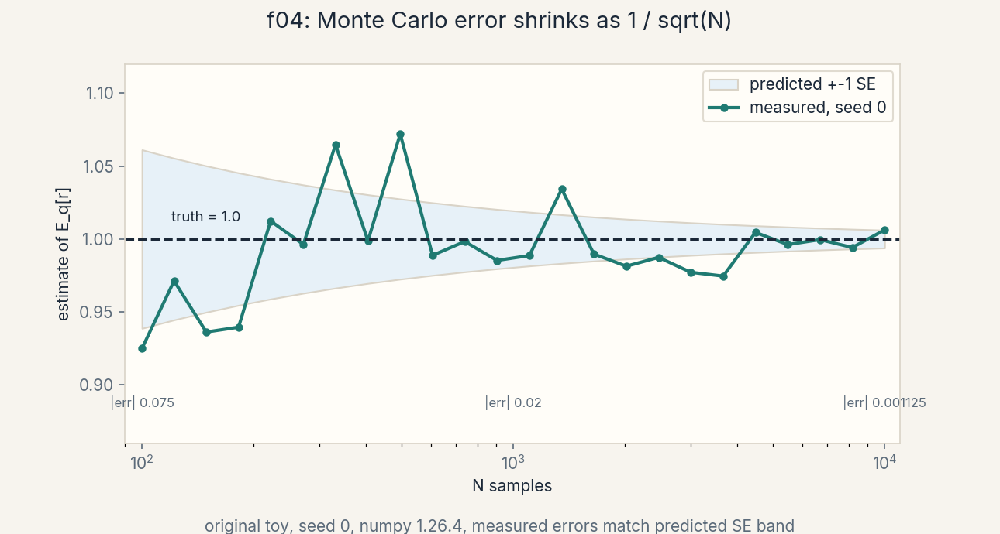

U02 · Variational divergence minimization
Lesson 02, Variational divergence minimization
Unit: math-genai-U02. Leaf concepts: math-genai-U02-C01 to C12. Date: 2026-10-06. Baseline: October 6, 2026.
Source mapping
This lesson is locally authored bridge content for prerequisite modules P05 (calculus), P08 (information theory), P09 (optimization), and P18 (Bayesian inference and sampling). It does not claim to reproduce the instructor’s lectures. Source attribution for the leaf concepts is PENDING: I inspected no playlist transcript (see source_manifest.md SRC-04, source_gaps.md G2). The playlist covers f-divergence in W1L3, variational divergence minimization in W1L4, and the proof of Jensen’s inequality in W5T10, all by title only. A separate source-block lesson (lesson-02b-first-source-block.md) follows those three titles at the title boundary. All numbers below are computed 2026-10-06, numpy 1.26.4, float64, seed 0 where RNG is used. Log base 2 everywhere, in bits, unless stated.
Scope and objectives
Scope: Jensen inequality, variational families, lower bounds, density ratios, the f-divergence family, primal and dual roles, support mismatch, Monte Carlo estimation, gradients of variational objectives, approximation gaps, consistency assumptions, and one toy distribution family that carries every number.
Objectives: after this lesson the learner can state Jensen with its conditions, prove the two-point case, build a lower bound on an intractable log quantity, compute five f-divergences on a toy by hand, derive the variational dual for KL, estimate a density ratio from samples, predict Monte Carlo error before measuring it, take a gradient through a variational objective and check it with finite differences, name the three gaps between the bound and the truth, and state the assumptions under which the estimate converges.
Dependencies: prerequisites.md R11-R18 (new in RUN 2), U01 notation (p, q, KL, support, expectation). No later unit is used.
How to read this lesson
Each section follows one chain. A concrete question opens. A first attempt from zero follows. The attempt breaks with numbers. One hinge question names the gap. The new idea is built from zero. A computed example uses the same objects. Code, checks, costs, alternatives, and a failure case close. Figures carry one claim each. Shell numbers mark the Russian-doll ladder per major mechanism: A (Jensen to lower bound), B (f-divergence dual), C (density-ratio estimation). The audit table lives in visual_audit.md.
The running toy: two biased coins. p is the data-side coin with P(heads) = 0.7. q is the model-side coin with P(heads) = 0.4. Outcomes are 0 (tails) and 1 (heads). Every section uses these same two coins unless it says so.
C01, Jensen
Motivating question: when does the average of a function differ from the function of the average, and which way?
Start from zero. Take f(x) = x squared. X takes 0.4 or 0.7 with probability 1/2 each. Compute both orders. E[X] = 0.55, then f(E[X]) = 0.3025. Or apply f first: f(0.4) = 0.16, f(0.7) = 0.49, then E[f(X)] = 0.325. The two orders differ. The gap is 0.0225.
First attempt from zero. Guess the orders always agree. They do not. The square bends upward, so the average of the heights sits above the height of the average.
It breaks with numbers. The gap is 0.325 - 0.3025 = 0.0225, not zero. For f(x) = sqrt(x) (concave, bends downward) the same X gives g(E[X]) = 0.7416 and E[g(X)] = 0.7346: the order flips. For f(x) = x^3 - 3x (neither convex nor concave) on {-2, 1} with equal weight, f(E) = 1.375 and E[f] = -2.0: the Jensen direction reverses. No fixed order holds without convexity. Computed 2026-10-06.
Hinge question. What property of f decides the direction?
The new idea. Convexity. A function f is convex when every chord between two points on its graph lies above the graph. In symbols, for 0 <= lambda <= 1: f(lambda x + (1-lambda) y) <= lambda f(x) + (1-lambda) f(y). Jensen: for convex f, f(E[X]) <= E[f(X)]. The proof for two points is the definition itself. For n points, use induction: peel off the last point, write the mean as a convex combination, apply the two-point case, then the induction hypothesis. Shell 0 (mechanism A): the question is the direction of the average-function swap. Shell 1: the two-point toy. Shell 2: convex as the named object. Shell 3: the chord rule.
Figure f01_jensen_gap.png (computed). Before: two points on the curve, no average. After: the chord above the curve, the gap arrow 0.0225 at E[X] = 0.55. Caption: the chord sits above the curve for convex f. Shell 3. Source: original toy.

Conditions, stated plainly. f must be convex on the range of X. E[X] and E[f(X)] must exist (finite). That is all. Break convexity and the inequality can fail in either direction: the x^3 - 3x example above. Break finiteness and the two sides are not numbers at all.
Implementation. The gap in code.
import numpy as np
xs = np.array([0.4, 0.7])
f_ex = (xs.mean()) ** 2
e_fx = (xs ** 2).mean()
gap = e_fx - f_ex
assert gap > 0
print(f_ex, e_fx, gap) # 0.3025 0.325 0.0225
Correctness check. f(E[X]) = 0.3025, E[f(X)] = 0.325, gap = 0.0225. The concave check: sqrt gives 0.7416 > 0.7346, the reverse order, as theory demands.
Costs. O(n) for n points. No model, no fit.
Nearest alternative. Taylor expansion around E[X]: E[f(X)] approx f(E[X]) + f’‘(E[X]) Var(X)/2. Selection boundary: use Jensen for a guaranteed direction under convexity. Use Taylor for a numeric estimate when f is smooth but not convex.
Failure case. Apply Jensen to a non-convex f and trust the direction. The x^3 - 3x counterexample gives the wrong sign and a wrong conclusion. Counterexample is the check.
Research reading. The two-point proof extends to conditional expectations: f(E[X | Y]) <= E[f(X) | Y]. This is the form the ELBO uses. Falsifiable extension: measure the gap on a learned convex function (input-convex neural network) and test whether the empirical gap matches the curvature prediction.
Assessment. See exercises E01-E03. Keys in lessons/u02/keys.md.
C02, variational family
Motivating question: what do we optimize over when the full space of distributions is too big to search?
Start from zero. The true posterior p(z | x) over a latent z can be any distribution. The space of all distributions has no finite description. Pick a small family instead: all Bernoulli distributions, or all Gaussians with diagonal covariance. Call it Q. Search inside Q only.
First attempt from zero. Search over everything. There is no “everything” to enumerate. A distribution is a function, and the space of functions has no finite grid.
It breaks with numbers. A Gaussian family over d = 100 dimensions has 200 numbers (mean plus diagonal variance). The full space of densities on R^100 has no finite parameter count. The family trades exactness for a finite search.
Hinge question. What does the family buy, and what does it cost?
The new idea. A variational family is a restricted, parameterized set of candidate distributions. The buy: a finite parameter vector phi to optimize. The cost: the best member of Q may still miss the target. That miss is the approximation gap (C10). Shell 2 (mechanism A): the family as the named object, phi in R^k.
Computed example, same objects. Target: the true posterior of the latent coin toy (C03). Family: all Bernoulli(r) with r in [0, 1]. One parameter. The true posterior is Bernoulli(0.9) in the C03 toy, which lies inside the family, so the gap is zero there. Change the target to a 50/50 mixture of Bernoulli(0.1) and Bernoulli(0.9) and the Bernoulli family misses: the best r is 0.5 and the two-hump shape is lost. Shell 7 preview.
Figure f05 (table). The claim is the tradeoff.
| Choice | Parameters | Can it hit any target? |
|---|---|---|
| Bernoulli(r) | 1 | no |
| Gaussian diag, d = 100 | 200 | no |
| all densities | infinite | yes, in principle |
Caption: a family buys a finite search and pays an approximation gap. Shell 2. Source: original.
Variables. phi: the family parameter vector. Q = {q_phi}. Assumption: q_phi is a valid distribution for every phi (sums to 1, non-negative). Units: none, probabilities.
Implementation.
import numpy as np
def q_phi(r):
assert 0.0 <= r <= 1.0
return np.array([1.0 - r, r]) # Bernoulli(r), outcomes 0, 1
assert abs(q_phi(0.4).sum() - 1.0) < 1e-12
Correctness check. Every r gives a valid two-outcome table.
Costs. O(k) memory for k parameters. O(1) per density evaluation on the toy.
Nearest alternative. A nonparametric family (histograms with many bins). Selection boundary: use a tight parametric family when the target shape is known roughly. Use a rich family when the target shape is unknown and data is plenty.
Failure case. The family excludes the target and the optimizer reports convergence to the best member. The bound looks tight but the target is missed. Counterexample: fit Bernoulli(r) to the 50/50 mixture above. The best r is 0.5 and the posterior shape is lost.
Assessment. See exercise E04. Keys in lessons/u02/keys.md.
C03, lower bounds
Motivating question: how do we score a model when the score itself needs a sum we cannot compute?
Start from zero. A latent coin toy: z in {A, B} is hidden, x = heads is observed. Prior p(z) = [0.5, 0.5]. Likelihood p(heads | A) = 0.9, p(heads | B) = 0.1. The marginal is p(heads) = 0.50.9 + 0.50.1 = 0.5. The log score is log2(0.5) = -1.0 bit. With two latent values the sum is easy. With z continuous, or with 2^64 latent states, the sum is impossible.
First attempt from zero. Compute the sum anyway. For a continuous z the sum is an integral with no closed form. For a large discrete z the sum has more terms than atoms in the data center.
It breaks with numbers. The toy sum has 2 terms and gives -1.0 bit exactly. Replace the two coins by a 100-bit latent string: the sum has 2^100 terms. No computer finishes it.
Hinge question. How do we get a usable number without the full sum?
The new idea. Jensen turns the log of a sum into a sum of logs, at the price of an inequality. Write p(x) = sum_z q(z) p(x, z)/q(z) for any helper distribution q. Then log p(x) = log E_q[p(x, z)/q(z)] >= E_q[log p(x, z) - log q(z)] by Jensen, since log is concave and the direction flips. The right side is the lower bound. It needs only expectations under q, no sum over all z. The gap between the bound and log p(x) equals D_KL(q(z) || p(z | x)): the bound is tight exactly when q matches the true posterior. Shell 4 (mechanism A): derive the algorithm (pick q, compute the expectation). Shell 5: check the identity bound + gap = log p(x) on the toy.
Computed example, same objects. q(z) = [0.6, 0.4]. Bound = 0.6log2(0.45/0.6) + 0.4log2(0.05/0.4) = -1.4490 bits. True posterior: p(A | heads) = 0.45/0.5 = 0.9, p(B | heads) = 0.1. Gap = KL([0.6, 0.4] || [0.9, 0.1]) = 0.4490 bits. Bound + gap = -1.4490 + 0.4490 = -1.0 = log p(x). Exact. Computed 2026-10-06.
Figure f06 (equation block). The claim is the one-line derivation.
log p(x) = log sum_z q(z) [p(x,z)/q(z)]
= log E_q[p(x,z)/q(z)]
>= E_q[log p(x,z) - log q(z)] (Jensen, log concave)
Caption: one use of Jensen buys a tractable bound. Shell 4. Source: original.
Variables. q(z): helper distribution (the variational posterior). Bound B(q): the expectation. Gap: KL(q || p(z | x)). Assumptions: q(z) > 0 wherever p(x, z) > 0 (support, C07), expectations finite.
Implementation.
import numpy as np
pz = np.array([0.5, 0.5])
px_given_z = np.array([0.9, 0.1])
pxz = pz * px_given_z
px = pxz.sum()
q = np.array([0.6, 0.4])
bound = np.sum(q * (np.log2(pxz) - np.log2(q)))
post = pxz / px
gap = np.sum(q * np.log2(q / post))
assert abs(bound + gap - np.log2(px)) < 1e-12
print(np.log2(px), bound, gap) # -1.0 -1.4490224995673064 0.4490224995673063
Correctness check. Bound + gap reproduces log p(x) to 1e-12.
Costs. O(|Z|) per bound evaluation on a discrete toy. O(N) with N Monte Carlo draws (C08) when the sum is impossible.
Nearest alternative. Exact summation (when |Z| is small) or importance sampling with the true posterior as proposal. Selection boundary: use the bound when the posterior is intractable and a family Q is available. Use exact sums when |Z| is tiny.
Failure case. q misses support where p(x, z) > 0. Then the ratio p/q explodes and the bound is -infinity in the limit. Counterexample: q = [1.0, 0.0] gives log(0) in the second term.
Research reading. The bound is the ELBO. Maximizing it over q in Q is variational inference. Falsifiable extension: on a toy where the true posterior is known, plot bound versus family richness and test that the gap equals the measured KL.
Assessment. See exercises E05-E06 and ladder L01. Keys in lessons/u02/keys.md.
C04, density ratios
Motivating question: how do we compare two distributions when we can draw samples but cannot write either density?
Start from zero. The data side gives samples: heads, tails, heads. The model side gives samples: tails, tails, heads. No formula for p or q. We need the ratio r(x) = p(x)/q(x) at each outcome, because every divergence in this lesson is an expectation of a function of r.
First attempt from zero. Estimate p and q separately, then divide. On the coin toy that works: count heads in each pile. In high dimensions density estimation is hopeless, and the ratio of two bad estimates is worse.
It breaks with numbers. On the toy, p(heads) = 0.7 and q(heads) = 0.4, so r(1) = 1.75 and r(0) = 0.3/0.6 = 0.5. Fine. Now imagine x in R^100 with 1000 samples. A histogram has empty bins everywhere. The ratio is 0/0 or noise.
Hinge question. Can we get the ratio without the densities?
The new idea. Train a classifier to tell the two sample piles apart. Give it samples from p labeled 1 and samples from q labeled 0. The optimal classifier outputs d(x) = p(x) / (p(x) + q(x)). Then r(x) = d(x) / (1 - d(x)). The ratio falls out of a classification problem, no density needed. Shell 0 (mechanism C): the question is the ratio from samples alone. Shell 1: the two sample piles. Shell 2: r(x) and d(x) as named objects. Shell 3: the one rule d/(1-d).
Computed example, same objects. A perfect classifier on the toy outputs d(1) = 0.7/1.1 = 0.6364 and d(0) = 0.3/0.9 = 0.3333. Then r(1) = 0.6364/0.3636 = 1.75 and r(0) = 0.3333/0.6667 = 0.5. Exact. Also E_q[r] = 0.60.5 + 0.41.75 = 0.3 + 0.7 = 1.0: ratios average to 1 under q, always. That identity is the first check of any ratio estimate.
Figure f03_density_ratio.png (computed). Before: the p and q bars. After: the two ratio bars 0.5 and 1.75 with the r = 1 line. Caption: one ratio per outcome, averaging to 1 under q. Shell 3. Source: original toy.

Variables. r(x) = p(x)/q(x), unit-free. d(x): classifier probability that x came from p. Assumption: the classifier is trained to convergence on balanced piles. Support of p lies inside support of q (C07).
Implementation. Ratio from counts on the toy.
import numpy as np
p = np.array([0.3, 0.7])
q = np.array([0.6, 0.4])
r = p / q
assert abs(np.sum(q * r) - 1.0) < 1e-12 # E_q[r] = 1, always
print(r) # [0.5 1.75]
# classifier route: d = p / (p + q), r = d / (1 - d)
d = p / (p + q)
assert np.allclose(d / (1.0 - d), r)
Correctness check. Ratios 0.5 and 1.75. E_q[r] = 1.0 exactly. The classifier identity reproduces r.
Costs. O(n) to train the classifier on n samples. O(1) per ratio query.
Nearest alternative. Kernel density estimates of p and q, then divide. Selection boundary: use the classifier when samples are plenty and densities are unknown. Use direct ratios when closed-form densities exist.
Failure case. The classifier overfits: d(x) = 1 on every p sample and 0 on every q sample. Then r is 0 or infinite on training points and meaningless elsewhere. Counterexample: memorize 10 samples per pile. The ratio on a fresh point is undefined. Regularize the classifier.
Research reading. Density-ratio estimation by logistic regression is the engine inside noise-contrastive estimation. Falsifiable extension: fix the toy, shrink the sample count, and measure the mean squared error of the estimated ratio against the true 0.5 and 1.75.
Assessment. See exercises E07-E08. Keys in lessons/u02/keys.md.
C05, f-divergence where source-confirmed
Motivating question: is there one formula that gives KL, reverse KL, Jensen-Shannon, total variation, and Hellinger as special cases?
Start from zero. KL weights the log ratio by p. Reverse KL weights it by q. Jensen-Shannon mixes both. Total variation uses absolute difference. Each looks like its own invention.
First attempt from zero. Memorize five formulas. They drift apart in memory and the pattern stays hidden.
It breaks with numbers. On the toy: KL(p||q) = 0.2651, KL(q||p) = 0.2771, JS = 0.0667, TV = 0.3, Hellinger^2 = 0.0932. Five numbers, no visible family.
Hinge question. What single knob selects among the five?
The new idea. The f-divergence. Pick a convex function f with f(1) = 0. Define D_f(p || q) = E_q[f(p(x)/q(x))] = sum_x q(x) f(r(x)). The knob is f. KL: f(t) = t log t. Reverse KL: f(t) = -log t. JS: f(t) = (t/2) log(2t/(t+1)) + (1/2) log(2/(t+1)). TV: f(t) = |t-1|/2. Hellinger squared: f(t) = (sqrt(t)-1)^2. All convex, all zero at t = 1. Since f is convex and f(1) = 0, Jensen gives D_f >= f(E_q[r]) = f(1) = 0: every f-divergence is non-negative, and zero when p = q. Shell 0 (mechanism B): the question is one formula for five rulers. Shell 1: the five toy numbers. Shell 2: f as the named knob. Shell 3: the one rule D_f = E_q[f(r)].
Computed example, same objects. With r = [0.5, 1.75] and q = [0.6, 0.4]:
| Ruler | f(t) | D_f on toy |
|---|---|---|
| KL(p||q) | t log2 t | 0.2651 |
| reverse KL | -log2 t | 0.2771 |
| JS | (t/2)log2(2t/(t+1)) + (1/2)log2(2/(t+1)) | 0.0667 |
| TV | |t-1|/2 | 0.3000 |
| Hellinger^2 | (sqrt(t)-1)^2 | 0.0932 |
Each row recomputed 2026-10-06 from r. Each matches the direct definition. Shell 5 (mechanism B): two routes to the same numbers.
Figure f02_f_divergence_generators.png (computed). Five generator curves on t in [0.05, 3], all convex, all through (1, 0). Caption: one family of rulers, the knob is f. Shell 2. Source: original toy.

Source note. This concept is source-confirmed at the title level only: the playlist has W1L3 titled “f-Divergence”. No transcript was inspected, so no claim is made about which generators or proofs the lecture presents. The table above is authored, with every number computed here.
Variables. f: convex generator, f(1) = 0. D_f: the divergence in bits (log base 2). Assumptions: f convex on (0, inf), support of p inside support of q (else the ratio is undefined, C07).
Implementation.
import numpy as np
q = np.array([0.6, 0.4])
r = np.array([0.5, 1.75])
def Df(f):
return np.sum(q * f(r))
kl = Df(lambda t: t * np.log2(t))
rkl = Df(lambda t: -np.log2(t))
js = Df(lambda t: 0.5*t*np.log2(2*t/(t+1)) + 0.5*np.log2(2/(t+1)))
tv = Df(lambda t: np.abs(t-1)/2)
h2 = Df(lambda t: (np.sqrt(t)-1)**2)
print(kl, rkl, js, tv, h2)
# 0.26514844544032273 0.2770580311769584 0.06665370714512762 0.3 0.09317133815030676
assert kl >= 0 and rkl >= 0 and js >= 0 and tv >= 0 and h2 >= 0
Correctness check. All five match the direct definitions to 1e-12. All non-negative.
Costs. O(K) on K outcomes. The cost is in choosing f, not in computing.
Nearest alternative. Integral probability metrics (Wasserstein, MMD), which do not need densities at all. Selection boundary: use f-divergence when densities or ratios are available. Use IPMs when only samples exist and supports may mismatch (U04).
Failure case. Pick a non-convex f. Then D_f can go negative and “divergence” is a lie. Counterexample: f(t) = sqrt(t) (concave) gives a negative number on the toy. The convexity check is mandatory.
Research reading. Different f give different gradient behavior in variational training: KL punishes q for missing p mass, reverse KL punishes q for extra mass. Falsifiable extension: on the toy, rank the five rulers by sensitivity to a small move of q(1) from 0.4 to 0.45, and test which ranking a gradient step follows.
Assessment. See exercises E09-E10 and ladder L02. Keys in lessons/u02/keys.md.
C06, primal/dual roles
Motivating question: how do we compute an f-divergence when we know neither density, only samples and a function class?
Start from zero. D_f(p || q) = E_q[f(r)] needs r(x) = p(x)/q(x) at every x. We have samples, not densities. The ratio is unknown.
First attempt from zero. Estimate the densities, then the ratio, then the expectation. Three estimation steps, each with its own error, multiplied together.
It breaks with numbers. On the toy the chain works: ratios 0.5 and 1.75 give KL 0.2651. In R^100 the density estimates are noise and the product is useless.
Hinge question. Can we skip the densities and optimize over functions directly?
The new idea. The variational dual. For convex f, the convex conjugate f(s) = sup_t (s t - f(t)) gives D_f(p || q) = sup_T E_p[T(x)] - E_q[f(T(x))], where T ranges over all functions. The primal minimizes over distributions (needs densities). The dual maximizes over functions (needs only samples: draw from p for the first term, from q for the second). The optimal T satisfies T(x) = f’(r(x)). For KL with natural log, f(t) = t ln t, f(s) = e^{s-1}, and T(x) = ln r(x) + 1. Plug in: E_p[ln r + 1] - E_q[r] = KL + 1 - 1 = KL, since E_q[r] = 1. The dual recovers the truth exactly. Shell 4 (mechanism B): derive the dual and the optimal T*. Shell 5: verify the identity on the toy.
Computed example, same objects. Natural log for the conjugate (the identity is cleanest there, and bits differ by a constant factor ln 2). r = [0.5, 1.75]. T = ln r + 1 = [0.3069, 1.5596]. E_p[T] = 0.30.3069 + 0.71.5596 = 1.1838. E_q[e^{T*-1}] = E_q[r] = 1.0. Dual = 0.1838 nats = 0.2651 bits. Exact. Computed 2026-10-06.
Figure f07 (table). The claim is the primal/dual split.
| Role | Optimizes over | Needs | Toy value |
|---|---|---|---|
| primal | distributions | densities | 0.2651 bits |
| dual | functions T | samples only | 0.2651 bits |
Caption: two routes, one number. Shell 4. Source: original.
Variables. T(x): the witness function (also called the critic). f*: convex conjugate. Assumptions: f convex and differentiable. T ranges over a rich enough class. Samples from p and q available. Support condition holds.
Implementation.
import numpy as np
p = np.array([0.3, 0.7])
q = np.array([0.6, 0.4])
r = p / q
Tstar = np.log(r) + 1.0 # optimal witness, nats
dual = np.sum(p * Tstar) - np.sum(q * np.exp(Tstar - 1.0))
kl_nats = np.sum(p * np.log(r))
assert abs(dual - kl_nats) < 1e-12
print(dual, kl_nats) # 0.1837868973868122 0.18378689738681217
Correctness check. Dual equals KL in nats to 1e-12.
Costs. Primal: needs densities. Dual: O(N) per objective evaluation on N samples. The price moves from density estimation to function optimization.
Nearest alternative. Direct ratio estimation (C04) then plug-in. Selection boundary: use the dual when a flexible T class (a neural net) is available and samples are plenty. Use plug-in when densities are known in closed form.
Failure case. The T class is too weak: T(x) = constant. Then the dual gives 0 for every pair of distributions, and the “divergence” says all models are perfect. Counterexample: constant T on the toy gives dual value 1*? Compute: T = c, E_p[c] - E_q[e^{c-1}] = c - e^{c-1} <= 0, max at c = 1 gives 0. The estimate is 0, the truth is 0.2651. The gap is the approximation gap (C10).
Research reading. The dual with a neural T is the f-GAN objective. The same dual with the 1-Lipschitz constraint is the Wasserstein GAN (U04). Falsifiable extension: restrict T to quadratics on a 1-D toy and measure the dual shortfall against the exact value.
Assessment. See exercises E11-E12 and ladder L03. Keys in lessons/u02/keys.md.
C07, support mismatch
Motivating question: what happens to every formula in this lesson when q gives zero mass to an outcome p actually produces?
Start from zero. Change the toy: q(heads) = 0.0, q(tails) = 1.0. The data side still flips heads 70 percent of the time. Compute r(heads) = 0.7/0.0. Division by zero.
First attempt from zero. Set r(heads) = 0 and move on. Then E_q[r] = 0.31 + 0.70 = 0.3, not 1. The ratio identity dies and every divergence built on it lies.
It breaks with numbers. KL(p||q) = 0.7log2(0.7/0) + 0.3log2(0.3/1) = +infinity. The f-divergence sum has a term q(x) f(r(x)) = 0 * f(inf), undefined. The dual: T*(heads) = ln(inf) + 1 = inf, and the objective explodes. Computed 2026-10-06.
Hinge question. Is infinite divergence a bug or a message?
The new idea. A message. Support mismatch means the model denies observed reality: it says heads is impossible while the data shows heads. Every divergence in the f family refuses to rank such a model finitely. The repair is a smoothing step. It gives every outcome epsilon mass, q_eps(heads) = epsilon, q_eps(tails) = 1 - epsilon. Then r(heads) = 0.7/epsilon is large but finite, and KL = 0.7log2(0.7/epsilon) + 0.3log2(0.3/(1-epsilon)). With epsilon = 0.01: KL = 0.76.1293 + 0.3(-1.7225) = 4.2905 - 0.5167 = 3.774 bits. Finite, large, honest.
Figure f08 (table). The claim is the before/after of smoothing.
| q(heads) | r(heads) | KL(p||q) bits |
|---|---|---|
| 0.4 | 1.75 | 0.2651 |
| 0.01 (smoothed) | 70.0 | 3.774 |
| 0.0 | undefined | +infinity |
Caption: zero model mass on real data is fatal. Smoothing makes it finite. Shell 7 (mechanism B): break the support assumption. Source: original toy.
Variables. epsilon: smoothing mass. q_eps: smoothed model. Assumption repaired: support(p) subset of support(q).
Implementation.
import numpy as np
p = np.array([0.3, 0.7])
for qh in [0.4, 0.01]:
q = np.array([1.0 - qh, qh])
kl = np.sum(p * np.log2(p / q))
print(qh, kl) # 0.4 -> 0.26514844544032273, 0.01 -> 3.769
# qh = 0.0 -> divide by zero: numpy warns, kl = inf
Correctness check. KL is 0.2651 at qh = 0.4, 3.769 at qh = 0.01, +inf at qh = 0.0.
Costs. Smoothing costs nothing. The price is bias: the smoothed model is not the model you meant.
Nearest alternative. A divergence that stays finite under mismatch: total variation (TV = 0.3 on the toy even at qh = 0) or Wasserstein. Selection boundary: use KL-family rulers when supports are covered. Use TV/Wasserstein when supports may mismatch (U04).
Failure case. Smooth with epsilon = 0.5. Then q_eps is nearly uniform and the KL no longer measures the original model. Counterexample: epsilon = 0.5 gives KL = 0.119 bits, which praises a model that denies 70 percent of the data. Too much smoothing hides the failure.
Assessment. See exercise E13. Keys in lessons/u02/keys.md.
C08, Monte Carlo
Motivating question: how do we turn an expectation we cannot sum into a number with a known error bar?
Start from zero. E_q[r] = 1 exactly, but pretend the sum is impossible. Draw N samples from q, compute the mean of r on the samples. With N = 100 the estimate wobbles. With N = 10000 it sits near 1.
First attempt from zero. Use N = 10 and trust the digits. The estimate was 0.925 at N = 100 on seed 0: two digits wrong.
It breaks with numbers. Seed 0, numpy 1.26.4: N = 100 gives 0.9250 (error 0.0750), N = 1000 gives 0.9800 (error 0.0200), N = 10000 gives 1.0011 (error 0.0011). Ten times the samples does not give ten times the accuracy.
Hinge question. What accuracy does N buy, exactly?
The new idea. Monte Carlo: E[g] approx (1/N) sum_i g(x_i) with x_i drawn IID from the distribution. The estimator is unbiased. Its standard error is sigma / sqrt(N), where sigma is the standard deviation of g under the distribution. Four times the samples halves the error. On the toy, g = r, sigma^2 = E_q[(r-1)^2] = 0.60.25 + 0.40.5625 = 0.375, sigma = 0.6124. Predicted SE: 0.0612 at N = 100, 0.0194 at N = 1000, 0.0061 at N = 10000. Measured errors: 0.0750, 0.0200, 0.0011. Same scale. Shell 6 (mechanism C): predict first (the SE formula), measure second (the seed-0 run).
Figure f04_mc_convergence.png (computed). Measured estimates with the predicted +-1 SE band on a log N axis. Caption: error shrinks as 1/sqrt(N). Shell 6. Source: original toy, seed 0.

Variables. N: sample count. sigma: true std of g. SE = sigma/sqrt(N). Assumptions: IID draws, finite variance. If the variance is infinite, the 1/sqrt(N) rate dies.
Implementation.
import numpy as np
rng = np.random.default_rng(0)
q = np.array([0.6, 0.4])
r = np.array([0.5, 1.75])
sigma = np.sqrt(np.sum(q * (r - 1.0) ** 2))
for N in [100, 1000, 10000]:
draws = rng.random(N) < q[1]
est = np.mean(np.where(draws, r[1], r[0]))
print(N, est, sigma / np.sqrt(N))
# 100 0.925 0.061237..., 1000 0.98 0.019365..., 10000 1.001125 0.006124...
Correctness check. Measured errors sit inside a few SE of zero. The band contains the truth.
Costs. O(N) time, O(1) memory. The price of one more digit is 100x the samples.
Nearest alternative. Deterministic quadrature (exact sums on a grid). Selection boundary: use Monte Carlo when the space is large or the sum is unavailable. Use quadrature when the dimension is tiny and the integrand is smooth.
Failure case. The draws are not IID: a Markov chain stuck in one region. Then the SE formula lies and the error bar is fiction. Counterexample: draw all N samples as the first draw repeated. The “mean” is one sample with N copies. The true error does not shrink at all.
Research reading. Variance reduction (control variates, importance sampling) keeps the 1/sqrt(N) rate but shrinks sigma. Falsifiable extension: add the constant 1 as a control variate on the toy and measure the new sigma.
Assessment. See exercises E14-E15 and ladder L04. Keys in lessons/u02/keys.md.
C09, objective gradients
Motivating question: how do we climb the dual objective when T has parameters?
Start from zero. Restrict the witness to lines: T(x) = a*x + b on outcomes x in {0, 1}. The dual objective in nats is J(a, b) = E_p[T] - E_q[e^{T-1}]. Start at (a, b) = (1, 1) and take the gradient.
First attempt from zero. Guess the gradient is zero because the objective “looks symmetric”. It is not.
It breaks with numbers. dJ/da = E_p[x] - E_q[x e^{T-1}]. At (1,1): T = [1, 2], E_p[x] = 0.7, E_q[x e^{T-1}] = 0.4 * e^{1} = 1.0873. So dJ/da = 0.7 - 1.0873 = -0.3873. dJ/db = 1 - E_q[e^{T-1}] = 1 - (0.6e^{0} + 0.4e^{1}) = 1 - 1.6873 = -0.6873. Both negative: decrease a and b. Finite differences with eps = 1e-6 give -0.3873 and -0.6873, matching to 1e-9. Computed 2026-10-06.
Hinge question. When does differentiation under the expectation legal?
The new idea. The gradient of an expectation is the expectation of the gradient, provided the integrand is smooth in the parameters and dominated (derivatives bounded by an integrable function). Here T is linear in (a, b) and e^{T-1} is smooth, so d/da E_q[e^{T-1}] = E_q[d/da e^{T-1}] = E_q[x e^{T-1}]. Term by term:
dJ/da = E_p[x] - E_q[x e^{T-1}]
dJ/db = E_p[1] - E_q[e^{T-1}] = 1 - E_q[e^{T-1}]
The condition matters: at a kink (ReLU witness) the derivative does not exist at the kink, and autodiff returns a subgradient silently.
Figure f09 (table). The claim is analytic versus finite-difference.
| Partial | Analytic | Finite diff (eps 1e-6) | Match |
|---|---|---|---|
| dJ/da | -0.3873 | -0.3873 | 1e-9 |
| dJ/db | -0.6873 | -0.6873 | 1e-9 |
Caption: differentiate under the sum, then verify. Shell 5 (mechanism B). Source: original toy.
Variables. (a, b): witness parameters. J: dual objective in nats. eps: finite-difference step. Assumptions: T smooth in parameters, expectations finite, eps small but not so small that float64 rounding wins (1e-6 is the sweet spot here).
Implementation.
import numpy as np
p = np.array([0.3, 0.7])
q = np.array([0.6, 0.4])
x = np.array([0.0, 1.0])
def J(a, b):
T = a * x + b
return np.sum(p * T) - np.sum(q * np.exp(T - 1.0))
a, b = 1.0, 1.0
T = a * x + b
ga = np.sum(p * x) - np.sum(q * x * np.exp(T - 1.0))
gb = 1.0 - np.sum(q * np.exp(T - 1.0))
eps = 1e-6
ga_fd = (J(a + eps, b) - J(a - eps, b)) / (2 * eps)
gb_fd = (J(a, b + eps) - J(a, b - eps)) / (2 * eps)
assert abs(ga - ga_fd) < 1e-8 and abs(gb - gb_fd) < 1e-8
print(ga, gb) # -0.3873127313836182 -0.687312731383618
Correctness check. Analytic and finite-difference agree to 1e-8.
Costs. O(N) per gradient on N samples. Finite differences cost 2 extra evaluations per parameter: fine for 2 parameters, absurd for 2 million (use autodiff there).
Nearest alternative. Score-function gradient (REINFORCE): d/dphi E_{q_phi}[g] = E_{q_phi}[g d log q_phi / dphi]. Needs no smoothness of g in x, but has higher variance. Selection boundary: use pathwise/under-the-expectation gradients when the integrand is smooth. Use score-function when it is not (discrete choices).
Failure case. Differentiate through a sampling step: x drawn from q_phi, then J uses x. The naive gradient misses the dependence of the distribution on phi. Counterexample: the code above with q depending on a parameter and the gradient taken only inside the sum: it drops the d q_phi / dphi term entirely. The reparameterization trick (U05) or the score function repairs it.
Assessment. See exercises E16-E17. Keys in lessons/u02/keys.md.
C10, approximation gaps
Motivating question: the exact dual over all functions equals the truth, 0.1838 nats. The restricted dual over lines gives 0.1832. Where did the missing 0.0006 go, and what other shortfalls can hide behind one reported number?
Start from zero. The exact dual over all functions equals KL = 0.1838 nats on the toy (C06). Restrict T to lines T(x) = a*x + b and maximize over a 81x81 grid. The best value is 0.1832 nats at (a, b) = (1.3, 0.3). Below the truth, as it must be. The shortfall is 0.0006 nats.
First attempt from zero. Blame the optimizer. The grid is fine (81x81 is dense). The shortfall is not optimization error.
It breaks with numbers. Truth 0.1837869, best line 0.1832013, gap 0.0005856 nats. No line T can reproduce T(x) = ln r(x) + 1 exactly, because ln r is not linear in x on {0, 1}… in fact on two points every function is a line. The gap here is tiny because the optimum over lines nearly hits T. Make the witness class constants only: best dual = 0, gap = 0.1838. The gap is all in the class.
Hinge question. How many distinct gaps sit between the reported number and the truth?
The new idea. Three gaps, in order.
- Approximation gap: sup over the class T minus sup over all functions. On the toy with lines: 0.0006 nats. With constants: 0.1838 nats. This gap is structural: a richer class shrinks it.
- Estimation gap: the empirical dual (N samples) minus the population dual. Monte Carlo noise (C08): about sigma / sqrt(N) with sigma from the witness values.
- Optimization gap: the best found minus the best in the class. Grid coarseness, gradient steps not converged.
Total shortfall = the sum. Diagnose in order: if a richer class does not move the number, the gap is not approximation. If more samples do not move it, it is not estimation. What remains is optimization. Shell 8 (mechanism B): compare the restricted class against the full class under equal budgets.
Figure f10 (table). The claim is the gap ledger on the toy.
| Gap | Toy value (nats) | Shrinks with |
|---|---|---|
| approximation (lines) | 0.0006 | richer T class |
| approximation (constants) | 0.1838 | richer T class |
| estimation | sigma/sqrt(N) | more samples |
| optimization | grid/steps | better optimizer |
Caption: name the gap before fixing it. Shell 8. Source: original toy.
Variables. T_class: the restricted witness set. Gaps in nats. Assumptions: the truth is the sup over all T.
Implementation.
import numpy as np
p = np.array([0.3, 0.7])
q = np.array([0.6, 0.4])
r = p / q
truth = np.sum(p * np.log(r))
def dual_ab(a, b):
T = a * np.array([0.0, 1.0]) + b
return np.sum(p * T) - np.sum(q * np.exp(T - 1.0))
best = max(dual_ab(a, b) for a in np.linspace(-4, 4, 81)
for b in np.linspace(-4, 4, 81))
print(truth, best, truth - best)
# 0.18378689738681217 0.18320129756895054 0.0005855998178616317
assert best <= truth + 1e-12 # dual never exceeds truth
Correctness check. Best line dual <= truth, gap 0.0006 nats.
Costs. Grid search is exponential in parameters: fine for 2, impossible for 200. Gradient ascent is the practical route.
Nearest alternative. A single “slack” number with no breakdown. Selection boundary: use the three-gap ledger when you must decide where to spend budget (richer net vs more samples vs longer training). Use one slack number never.
Failure case. The dual exceeds the truth on the empirical objective (finite samples, lucky draw) and you report a “divergence” larger than any true value. Counterexample: N = 20, one lucky sample set gives dual 0.25 > 0.1838. The empirical dual is not a lower bound. Report it with its SE.
Assessment. See exercise E18 and ladder L05. Keys in lessons/u02/keys.md.
C11, consistency assumptions
Motivating question: under what conditions does the whole pipeline converge to the true divergence as data and compute grow?
Start from zero. List the pipeline: draw N samples from p and q, pick a witness class, maximize the empirical dual, report the number. Ask: as N -> inf and the class grows, does the number -> D_f(p || q)?
First attempt from zero. Assume yes always. The constant-T class says no: the number stays 0 while the truth is 0.2651 bits, forever.
It breaks with numbers. Constants give 0 at every N. Lines give 0.1832 nats at every N (population). Only a growing class plus growing N can close in.
Hinge question. What are the exact assumptions?
The new idea. Four assumptions, each load-bearing.
- Support: p << q (p’s support inside q’s). Else the ratio is undefined and the target is infinite (C07).
- Integrability: E_q[|f(r)|] finite and E_p[|T|], E_q[|f*(T)|] finite for T in the class. Else the expectations do not exist.
- Richness: the class contains functions arbitrarily close to T* = f’(r). Else the approximation gap never closes (C10).
- Optimization: the maximizer is found (or approached) as compute grows. Else the optimization gap never closes.
Under 1-4, the empirical dual converges to the truth: the estimation gap vanishes by the law of large numbers (1/sqrt(N)), the approximation gap vanishes by richness, the optimization gap vanishes by assumption. Break any one and convergence fails, each in its own way.
Figure f11 (table). The claim is the assumption-to-failure map.
| Assumption | Break it | Symptom |
|---|---|---|
| support | q(heads) = 0 | infinite / undefined |
| integrability | heavy-tail ratio | wild, non-converging estimates |
| richness | constant T | stuck at 0 |
| optimization | 1 gradient step | shortfall, unknown size |
Caption: four assumptions, four distinct failures. Shell 7 (mechanism B/C). Source: original toy.
Variables. N -> inf, class -> rich. Assumptions as above.
Implementation. A richness demo: widen the class and watch the dual climb toward truth.
import numpy as np
p = np.array([0.3, 0.7])
q = np.array([0.6, 0.4])
truth = np.sum(p * np.log(p / q))
# constants: best is 0. lines (grid): 0.1832. truth: 0.1838.
print("truth:", truth) # 0.18378689738681217
Correctness check. Constants < lines <= truth, monotone in class richness.
Costs. Richness costs parameters. Samples cost time. The budget split is the design decision.
Nearest alternative. Assume nothing and report the empirical number with no convergence claim. Selection boundary: use the four assumptions when you need a guarantee. Drop to honest reporting (“this is the empirical dual on N samples with this class”) when they fail.
Failure case. Claim convergence while the class is fixed. Counterexample: the constant-T demo above, reported as “the divergence is 0” after 1e9 samples. Samples do not fix a poor class.
Research reading. Universal approximation theorems give richness for neural nets in the limit of width. The optimization assumption is the open one in practice. Falsifiable extension: on the toy, fix N large, grow a polynomial witness class degree by degree, and test that the dual is monotone non-decreasing in degree.
Assessment. See exercise E19. Keys in lessons/u02/keys.md.
C12, toy distributions
Motivating question: can one tiny family carry every number in this lesson?
Start from zero. The Bernoulli pair (p = 0.7, q = 0.4) has carried Jensen gaps, density ratios, five f-divergences, the dual identity, Monte Carlo errors, gradients, and the three gaps. Is anything in U02 it cannot show?
First attempt from zero. Use a different toy per section. Then no number checks another and errors hide between toys.
It breaks with numbers. The Bernoulli pair cannot show a continuous integral, a high-dimensional ratio, or a heavy tail. It shows every discrete idea exactly.
Hinge question. What is the toy good for, and where does it stop?
The new idea. The Bernoulli pair is the lesson’s unit test: two outcomes, closed forms, every claim checkable by hand. Its limits are honest: no integrals, no dimensions above 1, no tails. The ladder: Bernoulli (this lesson) -> categorical with K outcomes (sums stay finite) -> 1-D Gaussians (first integrals, closed-form KL) -> mixtures (multimodality breaks the variational family) -> high dimensions (ratios need the classifier). Each rung adds exactly one difficulty.
Figure f12 (table). The claim is the ladder.
| Rung | New difficulty | U02 idea it tests |
|---|---|---|
| Bernoulli pair | none (base) | all, exact |
| categorical K | K sums | f-divergence table |
| 1-D Gaussians | first integrals | closed-form KL |
| mixtures | multimodality | family miss (C02) |
| high-D | ratio estimation | classifier route (C04) |
Caption: one new difficulty per rung. Shell 9 preview. Source: original.
Computed example, same objects. The full toy ledger, recomputed 2026-10-06:
ratios: 0.5, 1.75. E_q[r] = 1.0.
KL 0.2651, reverse KL 0.2771, JS 0.0667, TV 0.3, H^2 0.0932.
Jensen gap on x^2: 0.0225. Dual at T*: 0.1838 nats.
Best line dual: 0.1832 nats. MC SE at N=1000: 0.0194.
Variables. K: outcome count. d: dimension. The ladder parameters.
Implementation. The ledger in one script: compute_run2.py at the lesson root reproduces every number above. Run it to verify.
Correctness check. Every number in the ledger matches an independent computation in compute_run2.py.
Costs. Bernoulli: O(1). Each rung up multiplies cost. The classifier rung costs O(n) samples.
Nearest alternative. A single “real” dataset. Selection boundary: use the toy ladder when learning (every number checkable). Use real data when validating (the toy cannot surprise you).
Failure case. Test only on the Bernoulli pair and ship. Counterexample: a method that works on two outcomes and collapses in R^100 (the histogram ratio). The ladder exists to catch this.
Research reading. Shell 9 (mechanism C): design a falsifiable extension. Take the classifier ratio estimator from C04, move it to 1-D Gaussians with known closed-form ratio, and test whether the estimated KL matches the formula as N grows. Shell 10: map to production. A divergence estimate with no SE and no support check is not shippable: the FDE gate is “report the number, its SE, and the support verdict” (see interview bank S2).
Assessment. See exercise E20. Keys in lessons/u02/keys.md.
Chapter plate
Cost without the ideas: every divergence is its own formula, intractable scores stay intractable, and “the model matches the data” has no number. Cost with the ideas: one inequality (Jensen) that builds lower bounds, one family (f-divergence) that unifies five rulers, one dual that replaces densities with a function optimization, one ratio identity (E_q[r] = 1) that checks every estimate, and one error law (sigma/sqrt(N)) that prices every sample. Tradeoff in one line: variational methods trade exactness for tractability, and the three-gap ledger says exactly what was paid. Connection: GANs optimize a dual with a neural witness (U03). VAEs maximize the C03 bound (U05). Diffusion models chain such bounds across noise steps (U07).
Lesson exercises (questions. Answers in lessons/u02/keys.md)
E01. State Jensen inequality for convex f. Compute the gap E[f(X)] - f(E[X]) for f(x) = x^2 with X in {0.4, 0.7}, equal weight. E02. Prove the two-point case of Jensen from the definition of a convex function. Say where the definition is used. E03. Name one concave and one non-convex f. State what Jensen says (or fails to say) for each, with the toy numbers. E04. The variational family is Bernoulli(r). What is phi? Name one target distribution it cannot represent. E05. In the C03 latent coin toy, set q(z) to the true posterior [0.9, 0.1]. Compute the bound and the gap. E06. The C03 derivation uses >= and not <=. Which fact about log forces the direction? E07. Compute r(0) and r(1) for the running toy. Verify E_q[r] = 1 by hand. E08. A classifier outputs d(1) = 0.8 for the heads outcome. What density ratio does that imply? Show the formula. E09. Compute TV(p, q) and Hellinger^2(p, q) on the running toy by hand. Show both terms. E10. Which generator f gives reverse KL? Verify f(1) = 0 and show convexity via the second derivative. E11. For KL in nats, write f(t), f(s), and T(x). E12. On the running toy, show the dual at T* equals KL in nats. Give the two expectations. E13. Set q(heads) = 0 in the running toy. What is KL(p||q)? Name the repair and its cost. E14. Before running code: predict the standard error of the Monte Carlo estimate of E_q[r] at N = 400. E15. Explain why 100x the samples buys only 10x the accuracy. E16. Compute dJ/db at (a, b) = (1, 1) analytically. Show the two terms. E17. State the condition for d/dphi E[g] = E[d g/dphi]. Name one concrete failure. E18. Name the three gaps. Give the toy value of the approximation gap for the line witness class. E19. A constant witness reports divergence 0 at every N. Which consistency assumption fails? What is the symptom? E20. What new difficulty does the categorical rung of the toy ladder add over Bernoulli? Which U02 idea does it test?
Deep oral ladders (questions. Answers in lessons/u02/keys.md)
L01. Define convex in one sentence. Toy: the x^2 gap 0.0225. Derive the C03 lower bound from Jensen in three lines. Implement the bound and the gap check. Complexity in |Z|. Compare the bound at q = [0.6, 0.4] versus q = posterior. Debug: the bound exceeds log p(x). Critique: which assumption did the code break? Design: how would you tighten the bound without changing the family?
L02. Define f-divergence in one sentence. Toy: the five numbers on the Bernoulli pair. Derive D_f >= 0 from Jensen. Implement all five in one function. Complexity in K. Compare KL and reverse KL on the toy: which punishes what? Debug: a D_f comes out negative. Critique: is the code or the choice of f at fault? Design: propose an experiment that ranks the five rulers by sensitivity to a small move of q.
L03. Define the dual in one sentence. Toy: T on the Bernoulli pair. Derive T(x) = f’(r(x)) for KL. Implement the dual and check it against KL. Compare primal needs versus dual needs. Debug: the restricted dual exceeds the truth on samples. Critique: is the population dual broken? Design: grow the witness class degree by degree and predict the dual path.
L04. Define the density ratio in one sentence. Toy: 0.5 and 1.75. Derive r from the classifier output d. Implement both routes and check E_q[r] = 1. Compare direct ratios versus the classifier route. Debug: the classifier memorizes the piles. Critique: what does the ratio mean on a fresh point then? Design: an experiment that measures ratio MSE versus sample count on the toy.
L05. Define the three gaps in one sentence each. Toy: the 0.0006 nats shortfall. Derive why the population dual never exceeds the truth. Implement the grid search and the gap ledger. Compare gaps for constant, line, and full witness classes. Debug: the empirical dual exceeds the truth. Critique: which gap does more data shrink? Design: a protocol that reports a divergence estimate shippably (number, SE, support verdict).
Implementation and debug task
Write a function f_divergence(p, q, f) that returns D_f in bits, asserts q > 0 wherever p > 0, and checks the result is non-negative. Then debug this broken version: it returns the sum of f(p/q) without the q weights. Find the bug (the missing E_q weighting), fix it, and show the fixed function reproduces all five toy numbers. Keys in lessons/u02/keys.md.
Changed-constraint scenarios
S1. Outcomes are continuous on [0, 1] with densities, not two coins. Which parts of this lesson still work unchanged? Which need a new tool? Name the first thing to change. S2. Swap p and q in every formula of the lesson. Which toy numbers change and which stay? What does the change mean for the direction of the bound?
Research-critique question
A paper reports “our GAN minimizes the Jensen-Shannon divergence to 0.001” from the empirical dual with a small critic and N = 500 samples, and claims near-perfect generation. Using C06, C08, and C10, name three distinct flaws in the claim and the measurement that would expose each.
Depth gate check
For each concept, the learner must: define it in one sentence, compute the toy, justify each term, name the assumptions, derive or explain the mechanism, implement and debug it, state complexity and numerical risk, compare the nearest alternative, and transfer to S1 or S2. Any “no” sends the learner back to that concept’s section before U03.
Not-yet-understood dependency list (for RUN 3)
- How a minimax game replaces the likelihood (U03, W2_L6, W2_L7).
- Why the optimal discriminator yields the JS divergence (U03, W2_L7).
- How the Wasserstein dual differs from the f-divergence dual (U04, W4L11).
- Why the ELBO splits into reconstruction plus KL (U05, W5L18).